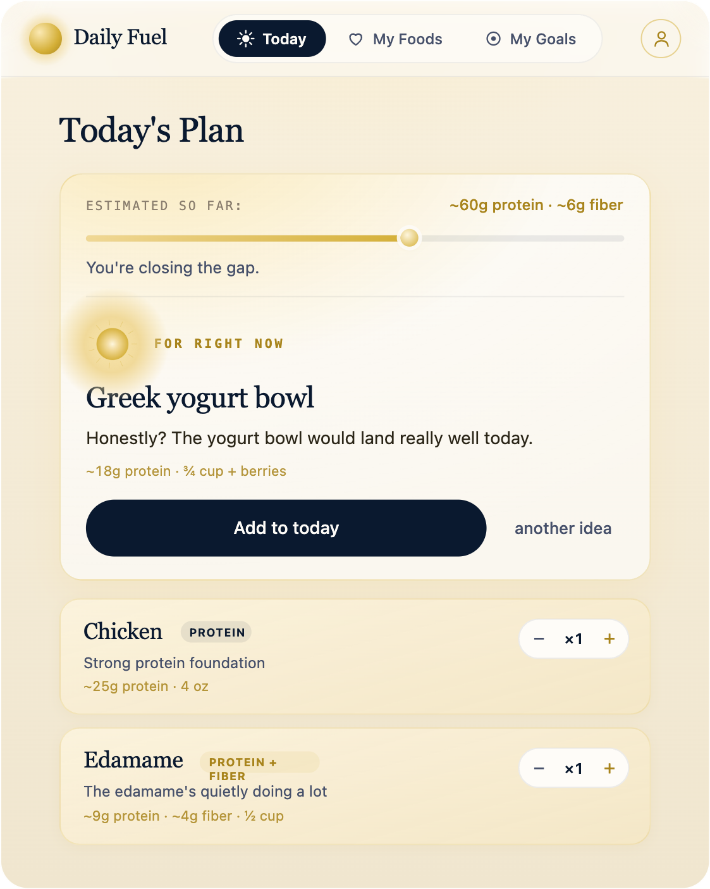
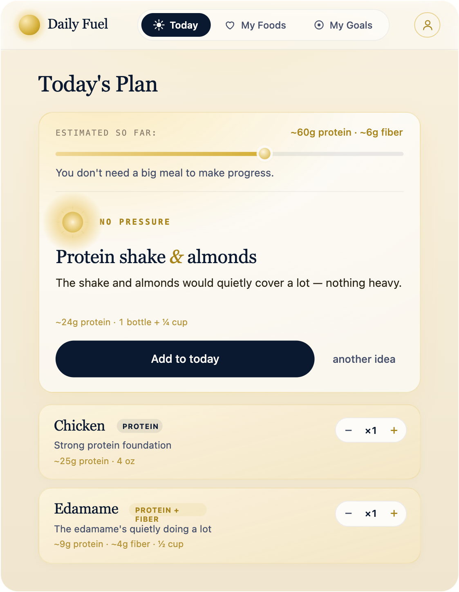
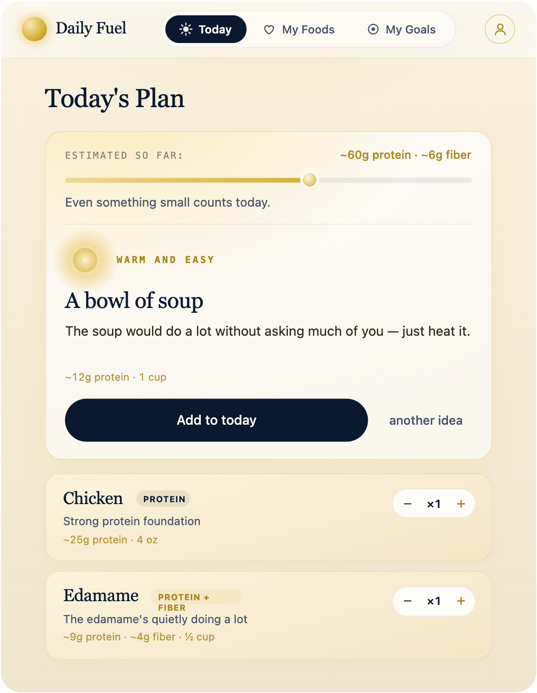
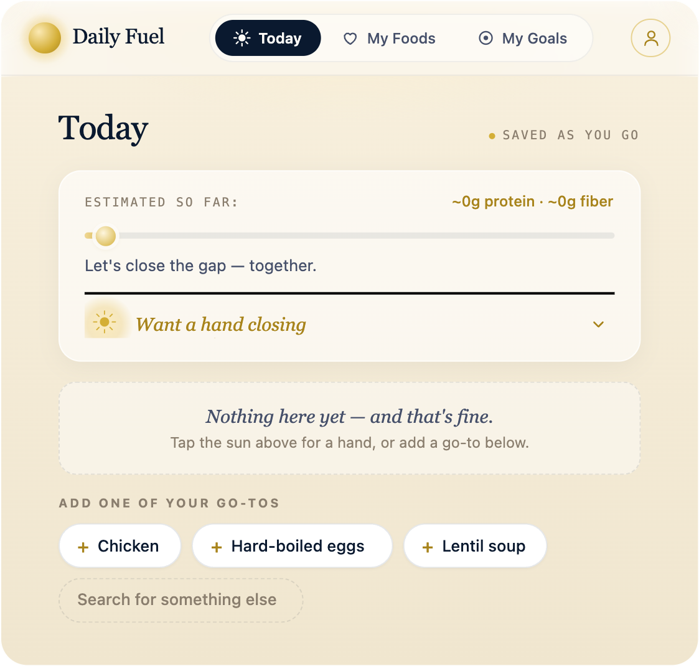
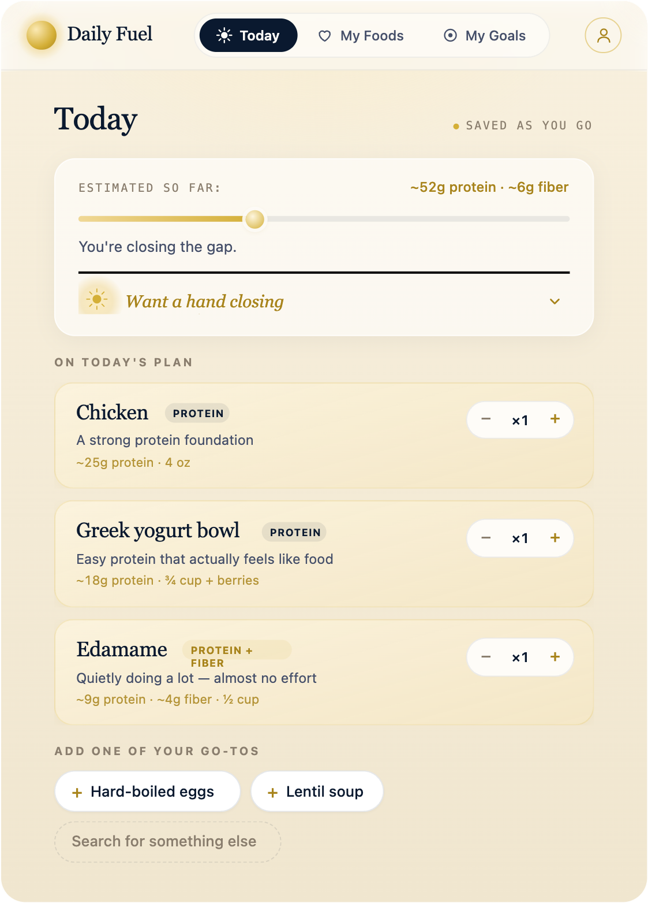
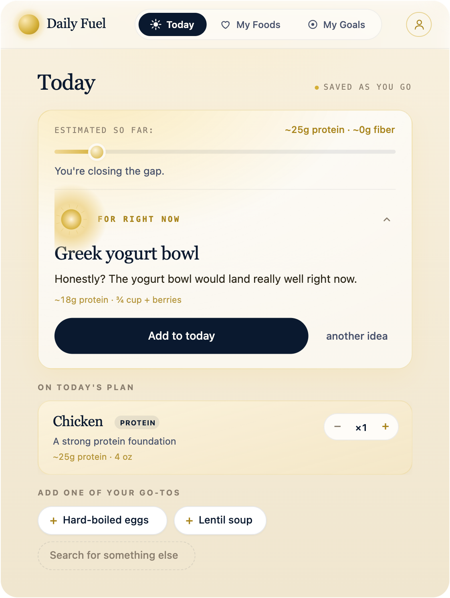
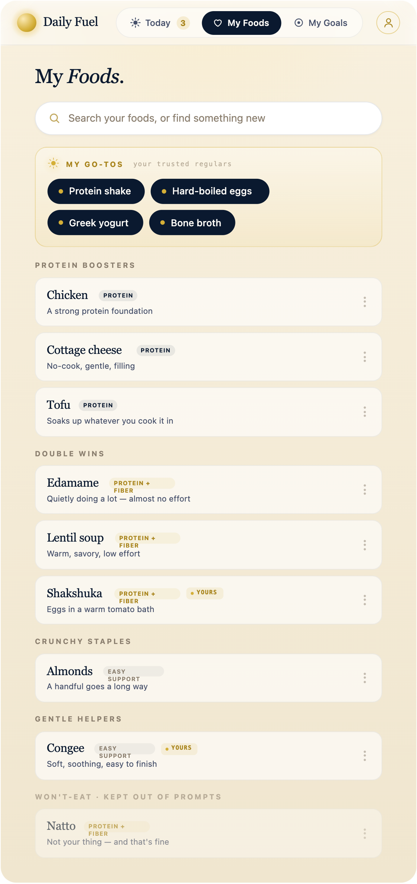
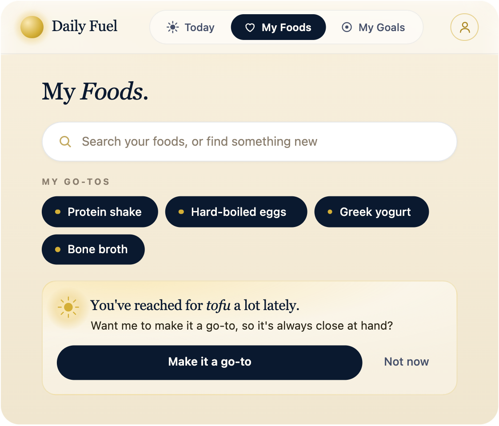
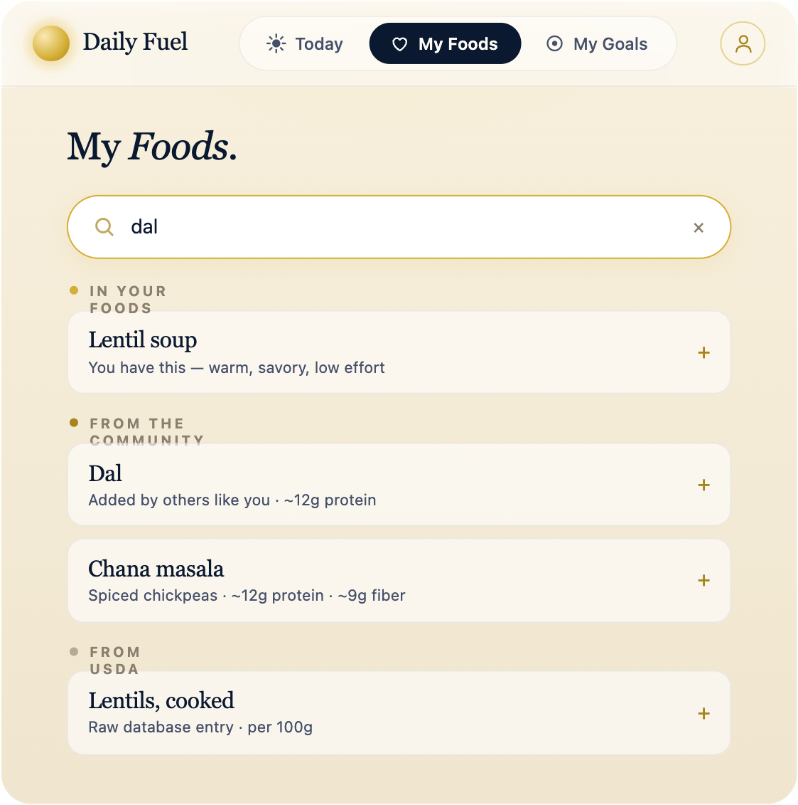

Daily Fuel helps you close the protein and fiber gap — gently, with foods that already work for you.
A Triad build · human-led, multi-AI · deployed and running

It asks how eating feels today, then offers small, doable ways to close the protein and fiber gap with foods that already fit your life. No calorie counting. No logging chore. No streak to break.
GLP-1 medications can quiet appetite dramatically. That can be powerful — and it can also make protein and fiber harder to get consistently. Most apps answer that by asking you to track more. Daily Fuel does the opposite.
It meets you where food is today — and shows what you’re gaining, never what you’re missing.
Same engine, three registers. The plan — and its tone — shift with how you feel, not just what you ate.
A good day“The yogurt bowl would land really well today.” Suggestions lean into momentum.

Not hungryIt asks for less, and protein-forward — small wins that still count.

A rough day“Soup that does a lot without asking much of you.” Warm and easy, no pressure.
No save button, no draft to lose. You build today with it, one doable choice at a time — and the horizon warms as protein and fiber fill in.



Your go-tos, your double wins, the things you’ll never eat. Search surfaces what’s yours first, and the foods you won’t touch are quietly kept out of every prompt.

My FoodsGo-tos, double wins, gentle helpers — and a “won’t-eat” shelf kept out of prompts.

A gentle nudgeIn-context, never nagging — and easy to wave off.

Relevant searchYour foods first, then a wider library when you want a change.
Daily Fuel is now in active alpha testing. We’re looking for people using GLP-1 medications who are willing to try the product, share honest feedback, and help shape what comes next.
This isn’t a polished launch. It’s an early opportunity to influence the product while it’s still evolving.